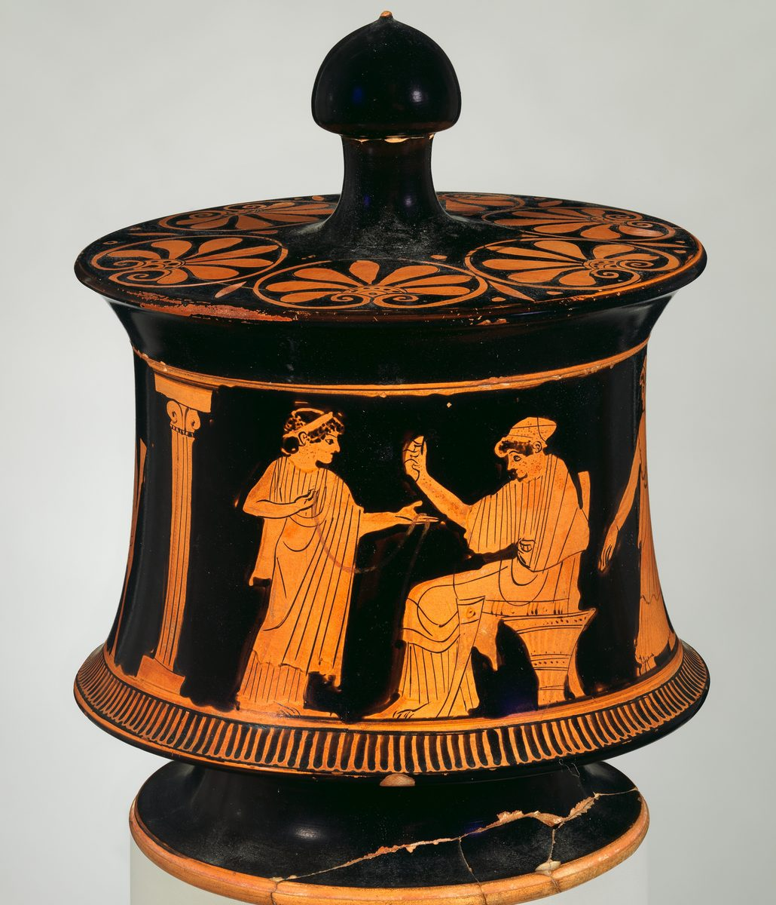

Unit 7 · Women in ancient Greece · Lesson 7
Working women
What do four very different sources show about women’s work in Classical Athens, and who is missing from them? Then outline and describe it under time, in short answers packed with precise evidence.
Year 11 Ancient History · Present with → or space · Read on a phone with R

Images: The Met (CC0 1.0). Full details on the last slide.
Review · books closed · 6 minutes · press K for the timer
Five questions from Lessons 5–6
- Who was a woman’s kyrios, and what did he do? Her legal guardian: her father, then her husband. He acted for her in law: the speaker says that “on the woman’s behalf her guardian may sue him” ([Demosthenes] 59.52; Murray’s “guardian” is the Greek kyrios).
- What did the citizenship law of 451/0 BCE require? Citizen birth on both sides: Pericles’s law, as [Aristotle] reports it, confined citizenship “to persons of citizen birth on both sides” (Athenaion Politeia 26.4). So, historians think, a citizen mother’s own birth now counted for her sons.
- What did a husband have to do with his wife’s dowry if he sent her away? He “must pay back the marriage portion”, or pay interest on it ([Demosthenes] 59.52). The dowry gave her some protection, but only through a man: her guardian, not she, could sue “on the woman’s behalf”.
- What does Hegeso’s stele show, and what does its inscription say? A seated woman looking at an object in her raised hand, probably jewellery that was once painted, while a standing attendant holds an open box. The inscription names her only as Hegeso, daughter of Proxenos, as the museum’s label puts it (about 410–400 BCE; a family grave plot).
- Writing · compare or contrast? Label each sentence contrast (a difference, which a contrast answer may use) or compare only (a likeness, which a contrast answer would leave out).
1 · “Unlike the men, who say that women live secure at home, Medea ranks childbirth as worse than battle.”
2 · “Both inscriptions name the person through a father, Lysanias and Proxenos.”
3 · “Whereas the Art Institute describes nine women on the pyxis, presumably in the women’s quarters, the Royal Ontario Museum says its fragments show women preparing two brides.” 1 contrast (a difference). 2 compare only: both marks a likeness, and NESA says contrast is ‘Show how things are different or opposite.’ 3 contrast (a difference, with evidence on both sides of the whereas).
Mark your own answers in a different colour. Which question did you find hardest?
Learning intentions and success criteria · 2 minutes
Today’s goals
- analyse the economic roles of women in Classical Athens
- answer outline and describe questions precisely and briefly
- describe women’s work inside and outside the household, with evidence
- explain why most evidence of paid work comes from poorer households
- pack precise evidence into short answers with expanded noun groups
Syllabus outcomes: AH-11-03 explains the role and significance of forces, features, events, individuals and groups in shaping the past · AH-11-05 analyses different types of sources for evidence to support a historical account or argument · AH-11-07 communicates historical understanding, applying historical knowledge, terms and concepts. Life Skills: AH-LS-05 describes features of places or societies in the ancient world · AH-LS-11 communicates information about the past using historical terms and concepts.
Note-making · the routine for the whole course
How to structure your notes
questions and key terms, written after
short phrases, arrows (→ leads to), abbreviations (c. = about; BCE = Before the Common Era)
- 1A new page for each lessonA cue column about a quarter of the page wide; title and date at the top; room for a summary at the bottom.
- 2Listen and look, then writeDon’t copy while a slide is being explained. Phrases, not sentences; a source for every claim.
- 3Write your own notes at each ✎ checkpointThen compare with the model notes, one row at a time. Add what you missed in a second colour.
- 4Write the cue questions afterwardsUse exam verbs: describe, outline, explain. To revise, cover your notes and answer the cues.
- 5Finish with a three-sentence summaryTwo checkpoints today: the speaker who explains · the four sources and the limit.
Key vocabulary · add to the unit word wall
Words for work, evidence and short answers
| Writing terms | Meaning |
|---|---|
| Outline | ‘Sketch in general terms; indicate the main features of.’ (NESA) — The main points, briefly and in order. |
| Describe | ‘Provide characteristics and features.’ (NESA) — Say what it was like, with specific features. |
| Added today | Meaning |
| Expanded noun group | A noun with describers before it and a qualifier after it, packing precise evidence into a few words: a young Athenian cavalryman who died at Corinth in 394/3 BCE. |
| Content terms | Meaning |
|---|---|
| Polis / oikos | A Greek city-state, such as Athens / a household: its people, property and slaves. |
| Added today | Meaning |
| Chaplet | A garland or wreath for the head. Weaving chaplets is making garlands, not cloth. |
| Medimnos | A Greek dry measure for grain; Forster’s translation calls it a “bushel”. |
| Maia / iatros | The Greek words for midwife and doctor, on Phanostrate’s grave stele. |
1 · A speaker explains · I do — read the sources first · about 2 minutes
A man on trial for his citizenship talks about his mother’s work
He has said this too about my mother, that she served as a nurse. We, on our part, do not deny that this was the case in the time of the city’s misfortune, when all people were badly off; but in what manner and for what reasons she became a nurse I will tell you plainly.
About 345 BCE (Murray: “with great probability”) · trans. A. T. Murray (Loeb, 1939)
For even if a nurse is a lowly thing, I do not shun the truth. … Many are the servile acts which free men are compelled by poverty to perform, … For, as I am informed, many women have become nurses and labourers at the loom or in the vineyards owing to the misfortunes of the city in those days, women of civic birth, too; …
Euxitheus speaking, in a court speech about his citizenship preserved among the speeches of Demosthenes · trans. A. T. Murray (Loeb, 1939)
Euxitheus’s deme, Halimus, has struck him off its list of citizens, and he is appealing to a court in Athens. His opponent, Eubulides, has raised his mother’s work: he says she sold ribbons and served as a nurse. Murray, the translator, says that an appellant who lost “might be sold as a slave”, and that Athenian law recognised as citizens only those of descent from citizens on both sides, as Lesson 6 taught.
Words: deme a local community of Attica that kept its own list of citizens · appeal to ask a court to overturn a decision · civic birth birth to citizen parents, as Murray’s “women of civic birth” says
1 · A speaker explains · I do — think aloud: why must he explain it, and what does it reveal about work and status?
Why must Euxitheus explain his mother’s work?
- 1What is at stake for him?His citizenship, and with it his freedom: Murray says an appellant who lost “might be sold as a slave”. Citizenship needed citizen birth on both sides, so his mother’s status mattered.
- 2Why must he explain her work?As he tells it, his opponent has used her work as a nurse and a ribbon seller against the family. So he must show that it says nothing about her birth: he says that poverty in “the time of the city’s misfortune” drove her to it.
- 3What does it reveal about work and status?He calls nursing “a lowly thing” and says poverty compels free men to do “servile acts”: paid work of this kind carried a stigma, and he must separate it from birth. Yet he says many women “of civic birth, too” worked as nurses and as labourers at the loom or in the vineyards.
Cold call: is it a fact that many citizen women worked for pay, or a claim? Who makes it, and why?
A claim, from one speaker with a reason to make it: it helps his case, and he says it only “as I am informed”. It tells us the idea was probably believable to a jury, but not how many women worked. So we write “Euxitheus claims …”, not “many citizen women worked”.
Notes checkpoint 1 of 2
A speaker explains his mother’s work
2 · Four sources, one limit · We do — in pairs, complete rows 1–2 of the work grid (rows 3–4 on the next slide) · 5 minutes in all
Evidence cards 1 and 2
… your duty will be to remain indoors and send out those servants whose work is outside, and superintend those who are to work indoors, and to receive the incomings, and distribute so much of them as must be spent, and watch over so much as is to be kept in store, … And when wool is brought to you, you must see that cloaks are made for those that want them.
Xenophon, Oeconomicus (probably after 362 BCE), a dialogue · Ischomachus, a wealthy Athenian, reports what he said; her few words reach us only through him · trans. E. C. Marchant (Loeb, 1923)
Words: incomings what is brought into the house, such as grain and wool · servants Marchant’s word; the Greek here (and at 7.37) is oiketai, which the Greek dictionary of Liddell and Scott defines as “household slave”
My husband died at Cyprus, leaving me five children, whom I had great trouble to bring up by weaving chaplets on the myrtle market. … But I must back to the market to weave my chaplets; I have twenty to deliver yet.
A comedy first performed about 411 BCE, written by a man for an Athenian audience · anonymous translation in Oates and O’Neill (1938), Perseus Digital Library
Pairs: for each card, what is the work, is it paid, and whose household is it? Write rows 1–2 of your grid.
2 · Four sources, one limit · We do — complete rows 3–4 of the work grid
Evidence cards 3 and 4
… many women have become nurses and labourers at the loom or in the vineyards owing to the misfortunes of the city in those days, women of civic birth, too; …
Euxitheus, speaking in his own defence, about 345 BCE · trans. A. T. Murray (Loeb, 1939)
Words: labourers at the loom Murray’s words; the Greek erithoi can mean “day-labourer, hired servant”, and for this passage Liddell and Scott give “spinsters and weavers, workers in wool”
Midwife (maia) and doctor (iatros) Phanostrate lies here, she caused pain to no-one and, having died, is missed by all.
… it cannot be entirely ruled out that she was or (perhaps less unlikely) had been a slave of the man from Melite.
The epitaph, then a comment by the editors · Attic Inscriptions Online (CC BY-SA 3.0), trans. S. Lambert and L. Totelin · the same note suggests, cautiously, that the man named from Melite may have been her father · the relief shows her seated, clasping the hand of a woman named Antiphile, with four children around them · no photograph here (see the credits)
2 · Four sources, one limit · We do — check your work grid · 1 minute
The work grid: who worked, at what, and who says so
| Who | Work | Paid? | Evidence | Whose household |
|---|---|---|---|---|
| Example (the I do): Euxitheus’s mother | a nurse, and a seller of ribbons | yes: poverty drove her to it, he says | Demosthenes 57.35 (her son, in his own defence) | her own family’s: poor in hard times, he says |
| 1 · Ischomachus’s wife | keeps the stores, sees that wool is made into cloaks, directs the household’s servants | no pay mentioned: it is her duty in her husband’s house | Xenophon, Oeconomicus 7.35–36 (her husband’s report) | a wealthy man’s: he can be called on to pay for a warship or a chorus (7.3) |
| 2 · The widow of the myrtle market | weaves chaplets (garlands) and sells them at the market | yes: she sells them | Aristophanes, Thesmophoriazusae 446–458 (a comic character) | her own: a widow with five children |
| 3 · “Many women” | nurses, and labourers at the loom or in the vineyards | probably: he says poverty in hard times drove them to it; no wages given | Demosthenes 57.45 (a speaker’s claim) | poorer households in hard times, he says |
| 4 · Phanostrate | midwife and doctor | not stated | her grave stele, with Attic Inscriptions Online’s comment | uncertain: named after a man from Melite, perhaps her father (AIO); found at Acharnai, far from Melite |
Check your rows. Which cell did you find hardest to fill, and why?
2 · Four sources, one limit · We do — cold call · 1 minute
Why do most sources on paid work concern poorer women?
Cold call: look at the “Paid?” and “Whose household” columns. Why do most of today’s sources on paid work concern poorer women? What else might shape which women appear?
Probably because a wealthy household could keep to the indoor ideal of Lesson 3: Xenophon pictures Ischomachus’s wife managing the house, with no pay mentioned. The poorer women in today’s sources earned when widowhood or the city’s hard times forced them to, and their work appears when a speaker or a playwright had a reason to mention it. And every writer is a man.
2 · Four sources, one limit · We do — one more source · 2 minutes
A limit in law: what could a woman contract for?
… for the law expressly forbids any child—or woman—to contract for the disposal of more than a bushel of barley.
A law-court speech about a dead man’s estate, 4th century BCE · trans. E. S. Forster (Loeb, 1927) · “bushel” translates the Greek medimnos, “a corn-measure” (Liddell and Scott)
Words: contract to make a binding agreement, such as a sale or a loan · litigant a person taking part in a law case
- 1What does it limit?What a woman (or a child) could contract for: nothing above a bushel of barley. It is a limit on the agreements she could make, not a job or a wage.
- 2Who says so?A litigant using the law to argue that a will made by a minor is invalid: the law as he states it. We have it only from him, so it shows the rule as stated, not how often it was enforced.
- 3For your gridAdd it as a limit on a woman’s power to act in law, not as a row of work: a note under the grid is enough.
Notes checkpoint 2 of 2
Four sources and a limit in law
3 · You do · Writing focus · 6 minutes · I do → We do → apply
Writing focus: outline and describe under time, with precise evidence
Outline: ‘Sketch in general terms; indicate the main features of.’ Describe: ‘Provide characteristics and features.’ NESA, Glossary of key words So (department advice): an outline gives the main features only, one per sentence, briefly; a describe adds specific features. Under time, spend your words on evidence, not on an opening about “a famous city”.
Worked example · written for this lesson · on a different question: Outline the main features of an Athenian marriage.
Padded Marriage in Athens was very different from today, and it was an important event in a woman’s life. Her father arranged it, which people might find unfair, and there was a dowry, which was a lot of property that came with her. Afterwards she was expected to have children, who were very important to families.
Sharp A bride’s kyrios, usually her father, gave her in marriage by a spoken pledge ([Demosthenes] 46.18). She brought a dowry, which her husband “must pay back” if he sent her away ([Demosthenes] 59.52). She was expected to bear “legitimate children” for his household ([Demosthenes] 59.122).
Precise a woman was buried → Hegeso, an Athenian woman of about 410–400 BCE honoured with a marble grave relief
In pairs, trim this padded sentence to one precise sentence. Keep the evidence and cut the padding; then cold call two pairs.
In ancient Athens, which was a famous city in Greece a long time ago, one very important thing about getting married was the dowry, which was basically a lot of valuable property that came with the bride, and which the husband was supposed to pay back if he got rid of her.
Trimmed A husband who sent his wife away “must pay back the marriage portion”, her dowry ([Demosthenes] 59.52).
Not a trim: “Marriage was important, and the dowry was part of it.” It is shorter, but it has lost the evidence and says nothing precise.
In the first minute of your timed outline, write your first sentence: one main feature, with precise evidence in an expanded noun group. Your Writing toolkit (booklet pages 3–4): the expanded noun group.
3 · You do · 19 minutes in all · deconstruct both questions first · 2 minutes
Your two questions: deconstruct them first
Outline the economic roles of women in Classical Athens. 3 marks · Describe the evidence for women’s paid work in Athens. 4 marks
Deconstruct them: what does each question ask you to do?
| Step | Outline … (3 marks) | Describe … (4 marks) |
|---|---|---|
| Verb | Outline: ‘Sketch in general terms; indicate the main features of.’ (NESA). The main features only, briefly | Describe: ‘Provide characteristics and features.’ (NESA). Specific features of the evidence |
| Topic | women’s economic roles: the kinds of work women did, in the household or outside it | the evidence for women’s paid work: what the sources show, not the work itself |
| Limits | Classical Athens (about 500–323 BCE); the main roles only, not every detail | Athens; paid work only (use the “Paid?” column of your grid); evidence means sources |
| Do | three to five sentences (department advice); one main role per sentence, each with the source that shows it, in precise noun groups; no introduction, no judgement | three to five sentences (department advice); say what each source shows, with specific features (who, what work, when, how sure), in a clear order; precise noun groups |
Check first: which of the two questions asks for less detail, and what would change if the first one said describe?
Outline asks for less: the main features, briefly. If the first question said describe, you would add specific features and evidence to each point.
3 · You do · timed outline · 5 minutes · press K, then 5
Write your outline
Outline the economic roles of women in Classical Athens. 3 marks
- Use your grid and Notes 2. Write three to five sentences (department advice).
- One main role per sentence: the main features only, with no opening and no ending.
- Name the source that shows each role.
- Pack your evidence into expanded noun groups, and keep each source’s hedge.
Use your grid and the evidence cards. Frame: “[Woman or group], [noun group], worked as … (source).” A noun group has describers, the thing and a qualifier, as in a young Athenian cavalryman who died at Corinth in 394/3 BCE.
3 · You do · timed description · 7 minutes · press K, then 8 and stop at 1:00 · then check it
Write your description
Describe the evidence for women’s paid work in Athens. 4 marks
- Use your grid (“Paid?” and “Evidence”) and Notes 2. Write three to five sentences (department advice).
- Say what each source shows about paid work, with specific features: who, what work, when, how sure.
- Say who is speaking when it matters: a speaker, a comic character, an inscription.
- Pack your evidence into expanded noun groups, in a clear order.
After your answer: Phanostrate was probably a citizen, but she may have been enslaved or freed. Assess how each possibility changes what her stele tells us about women’s work.
Use your grid and the evidence cards. Frame: “[Woman or group], [noun group], worked as … (source).” Say it to a partner before you write it.
Finish your notes If time · or at home
Summary: three sentences
- Why did Euxitheus explain his mother’s work, and what did he claim about other women?
- Which source limits what a woman could contract for, and who states it?
- What is the difference between outlining and describing, and what does an expanded noun group add?
Check for understanding · hinge question · hold up your A, B, C or D card on “3, 2, 1, show”
Isaeus 10.10 is best evidence of…
- Athe wages that women earned in markets
- Ba legal limit on the contracts women made
- Cthe number of women who worked for pay
- Dhow wives managed the slaves of a house
The passage says the law “expressly forbids any child—or woman—to contract for the disposal of more than a bushel of barley”. A is wrong: no wages or markets are mentioned. C is wrong: it gives no numbers of women. D is wrong: that is the subject of Xenophon’s Oeconomicus 7, a different source.
Exit ticket · 4 minutes · before you leave
Why do most sources on paid work concern poorer women?
Write two sentences. Use at least one source, and say who is speaking.
Probably because a wealthy household could keep the indoor ideal: Xenophon pictures Ischomachus’s wife managing the house, with no pay mentioned, while the poorer women in the sources earned when widowhood or hard times forced them to. They appear in speeches such as Demosthenes 57, and in comedy, when a speaker or a playwright had a reason to mention them. Not “only poor women worked”: the sources cannot show that, and every writer is a man.
Then check yourself against today’s three “I can” statements. Next lesson: priestesses and festivals: women in Athenian religious life, with timed source questions.
Practice and review · 1 of 4 · true, false, justify
True or false? Justify your answer
- 1Euxitheus says that his mother served as a nurse in a time of hardship. True — “she served as a nurse”, he says, “in the time of the city’s misfortune, when all people were badly off”, and he does not deny it (Demosthenes 57.35).
- 2In Demosthenes 57.45 the women who worked as nurses and labourers are said to be slaves. False — Euxitheus says many were “women of civic birth, too”: that is his claim, in his own defence.
- 3Xenophon’s Oeconomicus 7 shows Ischomachus’s wife earning wages. False — no pay is mentioned: it shows her directing the stores, the wool and the servants as her duty, in her husband’s report of what he told her.
- 4The widow who weaves chaplets in the Thesmophoriazusae is a character in a comedy written by a man. True — so she shows that such a woman was probably believable to the audience, but a comedy cannot prove that she existed.
- 5Attic Inscriptions Online says that Phanostrate was certainly a citizen. False — it suggests the man from Melite may have been her father, but says “it cannot be entirely ruled out that she was or (perhaps less unlikely) had been a slave of the man from Melite”.
- 6Isaeus 10.10 says that the law forbids a woman to contract for the disposal of more than a bushel of barley. True — as one litigant states it: the law “expressly forbids any child—or woman—to contract for the disposal of more than a bushel of barley”. It is a limit on contracts, not a wage, and we have it only as this litigant states it.
Practice and review · 2 of 4 · writing · precise noun groups
Make it precise, then deconstruct a new question
- “a soldier on a grave” No name, no date, no place: it fits thousands of graves. “Dexileos, a young Athenian cavalryman who died at Corinth in 394/3 BCE, shown on a marble memorial relief in his family’s grave plot”
- “a law about money in marriage” No speaker, no date, no source, and no hint of what the law required. “a law, as quoted in a speech of about 343–340 BCE spoken and probably written by Apollodorus, requiring a husband who sent his wife away to pay back her dowry ([Demosthenes] 59.52)”
- “a play with women in it” No title, date or action: it fits dozens of plays. “Lysistrata, an Athenian comedy first produced in 411 BCE, in which the wives refuse their husbands until the men make peace”
- Exercise 2 · deconstruct: “Describe the Hegeso stele. (3 marks)” What is the verb, the topic, the limits, and what must the answer do? Verb: describe, ‘Provide characteristics and features.’ (NESA). Topic: what the Hegeso stele shows and says. Limits: this stele only, not the Dexileos stele or the vases. Do: three to five sentences for 3 marks (department advice), of specific features (pose, objects, setting, inscription) in precise noun groups, with what you infer hedged.
Practice and review · 3 of 4 · extension · assess
Citizen, enslaved or freed: what could her stele tell us?
Phanostrate was probably a citizen, but she may have been enslaved or freed. Assess how each possibility changes what her stele tells us about women’s work.
Assess: ‘Make a judgement of value, quality, outcomes, results or size.’ NESA, Glossary of key words
- Deconstruct it: verb, topic, limits, do.
- Use card 4 (the Phanostrate stele): the epitaph, and AIO’s own hedges about her status.
- Shape: Judge → Evidence → Analyse → Evaluate → Resolve, with the same degree of judgement in the Judge and the Resolve.
- Ask yourself: what would the stele show about work if she were each of the three? What does it show whichever she was? Which uncertainty matters more, and why?
Practice and review · 4 of 4 · cover your notes and answer from memory
Quick checks
- Why did Euxitheus explain his mother’s work? His citizenship was at stake and, as he tells it, his opponent used her work against him; he said that poverty in hard times, not her birth, explained it (Demosthenes 57.35, 57.45).
- What does Oeconomicus 7 say Ischomachus’s wife must do, and who reports it? Stay indoors and manage the house: send out the servants whose work is outside, superintend those working indoors, receive and distribute the stores, and see that cloaks are made from wool (7.35–36). Her husband reports it; no pay is mentioned.
- What does the widow in the Thesmophoriazusae say she does, and how sure can we be that she existed? She weaves chaplets (garlands) and sells them at the myrtle market to bring up five children (446–458). She is a comic character written by a man: believable to the audience, not proof that she existed.
- What do Phanostrate’s epitaph and relief say and show, and what is uncertain? The epitaph calls her “midwife (maia) and doctor (iatros)”; the relief shows her seated, clasping Antiphile’s hand, with four children. AIO suggests the man from Melite may have been her father, but “it cannot be entirely ruled out” that she was or had been enslaved.
- What does Isaeus 10.10 limit, and who says so? What a child or woman could contract for: nothing above a bushel (medimnos) of barley. A litigant states it as the law; we have it only from him.
- What does each of outline and describe ask for? NESA: outline is ‘Sketch in general terms; indicate the main features of.’ and describe is ‘Provide characteristics and features.’ So an outline gives the main features only, briefly; a description gives specific features.
- What does an expanded noun group do? It packs precise evidence into a few words: describers, the noun and a qualifier, as in “Hegeso, an Athenian woman of about 410–400 BCE honoured with a marble grave relief”.
Sources and credits
Where everything comes from
Xenophon, Oeconomicus 7.3, 7.5–7.6, 7.35–7.37, 7.41: trans. E. C. Marchant (Loeb, 1923), Perseus Digital Library (CC BY-SA 3.0 US), checked against the printed volume on archive.org. Aristophanes, Thesmophoriazusae 446–458: anonymous translation in The Complete Greek Drama, ed. W. J. Oates and E. O’Neill Jr. (Random House, 1938), Perseus Digital Library (CC BY-SA 3.0 US). Demosthenes 57.35 and 57.45 and [Demosthenes] 59.52: trans. A. T. Murray (Loeb, 1939; public domain), archive.org and Perseus (which credits the DeWitts in error). Isaeus 10.10: trans. E. S. Forster (Loeb, 1927; public domain), Perseus. [Aristotle], Athenaion Politeia 26.4 (review answer): trans. H. Rackham (Loeb, 1935; public domain), Perseus.
Phanostrate: Attic Inscriptions Online, IG II² 6873, translation and commentary by S. Lambert and L. Totelin (CC BY-SA 3.0); open the page and follow its “Images” link (Athenian Democracy) to see a photograph of the stele, which is not reproduced here. Hegeso (review answer): the National Archaeological Museum’s gallery label for 3624, as transcribed on Wikimedia Commons (Lesson 5). Greek words: H. G. Liddell and R. Scott, A Greek-English Lexicon, Perseus Digital Library (CC BY-SA 3.0 US). Background on the dates and on Isaeus: Wikipedia, “Thesmophoriazusae” and “Isaeus” (CC BY-SA 4.0); B. B. Rogers, Loeb Aristophanes III (1924), introduction to the Thesmophoriazusae.
Outcomes and content: NSW Education Standards Authority (NESA), Ancient History 11–12 Syllabus (2024). © NESA. Directive verbs: NESA, Glossary of key words.
- Pyxis showing a seated woman with a spindle, Attic (Athens), about 460 BCE (Metropolitan Museum of Art, 06.1117a, b) · Photo: The Metropolitan Museum of Art · CC0 1.0 · source
All images are public domain or openly licensed, and were resized or cropped for the web. Each is shared under the licence shown.